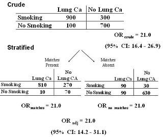

Example: Do Not Adjust - Lung Cancer and Matches
Lead Author(s): Jeff Martin, MD
Crude and Adjusted Data
Here is an example of what can happen when you adjust for something you don’t need to adjust for.

Comparing Results
When we look at the effect of matches on the association between smoking and lung cancer.
- There was no interaction and furthermore,
- When we looked at the measure of association in the two matching-using strata,
- we saw the same effect as the unadjusted association.
In other words, matches had no effect on the association.
Reporting
In this case, we would report the crude estimate, only right?
- Why not report the adjusted estimate -- the average of the stratum-specific estimates?
- One answer is that it is too much work.
- The second answer is that often when you stratify, you pay a little price in terms of statistical precision.
Loss of Precision
In other words, the confidence interval of the crude estimate will be narrower than the CI of the adjusted measure - they both will have 21 as their point estimate but the crude association will be more precise.
- As you can see, the 95% confidence interval for the crude estimate is 16.4 to 26.9 compared to 14.2 to 31.1
Hence, this illustrates why you don’t want to adjust for things that you don’t need to.